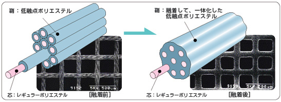

| 形が自在に変化し、型くずれしない新機能ポリエステル |
|
ベルカップルはコンジュゲート技術により開発された芯鞘構造ポリエステルフィラメント。芯部にレギュラーポリエステル、鞘部に低融点ポリエステルを組み合わせることにより、融点の異なる二種類のポリマーが熱加工により様々な形態に変化します。この糸を使用した織編物素材は、高いヒートシール性(目ズレ防止)、形態安定性、硬度調整性を発揮します。ベルカップルは、使用方法により新たな用途展開が期待される新時代の新機能ポリエステルフィラメントです。
|
| |
 |
| |
| ベルカップルの優れた特長 |
|
■
熱によって繊維が溶ける（熱融着性）
|
|
熱加工(190℃)を施すことにより、鞘部の低融点ポリエステルが溶融し、マルチフィラメントはモノフィラメント(単糸)となり、高い反発性が得られます。ベルカップルを使用し熱処理した生地はホツレや目ズレが防止できます。
|
|
■
硬さが自由自在（硬度調整性）
|
|
加工温度又は他素材との組み合わせにより、硬さの違う生地ができます。従来のように樹脂加工工程が省略できるので、コストパーフォマンス、環境衛生的にも優れています。 |
|
■
型くずれしにくい（形態安定性）
|
|
生地に折り目をつけたりシワをつけてヒートセットすると、その折り目やシワが固化し、形態安定性に優れたプリーツ性、成形性が実現します。 |
|
■ 優れた耐久性
|
|
耐洗濯性に優れており、繰り返し洗濯した後もその効果は持続します。また耐熱性･堅牢性に優れており、熱による効果の低下及び、色落ちなどの心配はありません。 |
|
■ 形が自由自在（熱成形性）
|
|
熱エンボスによる柄出し等が簡単にできます。また熱成型性に優れているので、エンボス後の型くずれがしにくく、その形態は半永久的に持続します。 |
|
| |
| 代表銘柄・主要物性 |
| タイプ |
繊度（dT） |
強度（cN/dT） |
伸度（％） |
熱収縮率（％） |
| 56/24LHD（ブライト） |
53.8 |
4.32 |
38.6 |
9.0 |
| 84/24LHD（ブライト） |
81.6 |
4.43 |
37.4 |
8.5 |
| 167/16LHC（ブライト） |
161.3 |
4.19 |
30.0 |
8.5 |
| 28/01LCO（ブライト） |
27.8 |
3.62 |
48.0 |
7.0 |
| 26/01LHC（ブライト） |
25.0 |
5.30 |
25.0 |
8.0 |
| 33/01LCO（ブライト） |
32.7 |
5.30 |
22.0 |
8.0 |
| 280/16LCO（ブライト） |
277.8 |
4.15 |
39.0 |
4.0 |
|
| |
| さまざまな用途展開 |
| ■ フィルター |
●空調 ●廃液用湿式･乾式フィルター ●洗濯ネット 緑茶･飲料抽出パック
●ポプリ袋 |
| ■ メッシュ |
●スクリーン用メッシュ織物 ●農業・漁業･土木資材 ●網戸 ●刺しゅう基布 |
| ■ 芯地 |
●衣料用芯地 ●カーテン用芯地 ●コルセット用芯地 |
| ■ 補強材 |
●逆浸透膜スペーサー |
| ■ 高プリーツ材 |
●照明具カバー(傘) ●形態安定傘 ●ブリーツカーテン ●テント |
| ■ クッション材 |
●スリッパ ●靴 ●カーシート ●椅子張地 ●マウスパッド |
| ■ 成形型材 |
●バッグ(袋物) ●スピーカーネット ●帽子 ●ブラカップ |
| ■ 硬化材 |
●ロールスクリーン ●ラッピング材 |
| ■その他 |
●モノフィラメントの代用 ●樹脂加工の代用 |
|